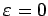
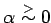

Inhalt Index DeskTop Bronstein

 Dynamische Systeme und Chaos Bifurkationstheorie, Wege zum Chaos Übergänge zum Chaos
Dynamische Systeme und Chaos Bifurkationstheorie, Wege zum Chaos Übergänge zum Chaos


Gegeben sei ein stabiler periodischer Orbit von (17.17), der bei  seine Stabilität verliert, indem genau einer der Multiplikatoren, die innerhalb des Einheitskreises lagen, den Wert +1 annimmt. Nach dem Satz über die Zentrumsmannigfaltigkeit läßt sich die entsprechende Sattelknoten-Bifurkation der POINCARÉ-Abbildung durch eine eindimensionale Abbildung in der Normalform
Wie die Abbildung zeigt, verweilen für  die Iterierten von relativ lange in der Tunnelzone. Für die Differentialgleichung (17.17) bedeutet dies, daß die entsprechenden Orbits relativ lange in der Umgebung des ursprünglichen periodischen Orbits bleiben. In dieser Zeit ist das Verhalten von (17.18) nahezu periodisch (laminare Phase). Ist die Tunnelzone durchlaufen, entflieht der betrachtete Orbit, was zu irregulären Bewegungen führt (turbulente Phase). Nach einem gewissen Zeitraum wird der Orbit eingefangen und erneut eine laminare Phase eingeleitet. Ein seltsamer Attraktor entsteht in der beschriebenen Situation dann, wenn der periodische Orbit verschwindet und seine Stabilität an die chaotische Menge vererbt. Die Sattelknoten-Bifurkation ist nur eine der generischen lokalen Bifurkationen, die im Intermittenz-Szenario eine Rolle spielen. Zwei weitere sind die Periodenverdopplung und die Abspaltung eines Torus.